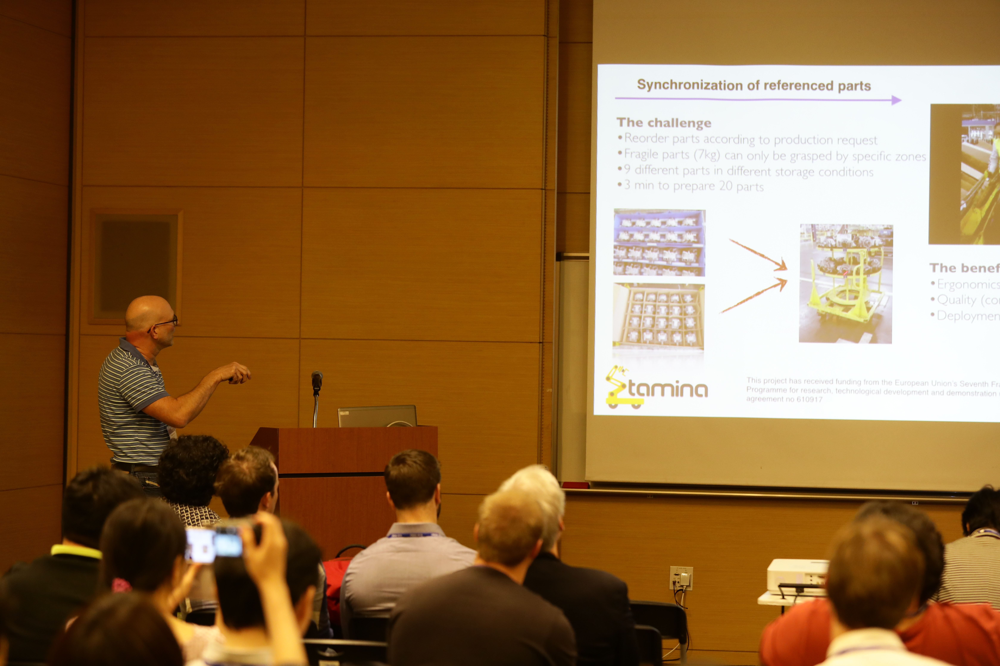

Awards
Marie Sklodowska-Curie Actions Seal of Excellence

I am at the plenary discussion on Social Aspects in Integrating AI and Robotics at the fourth Lucia PhD school on "Artificial Intelligence and Robotics"
Wokrshop on Integrating Multiple Knowledge Representation and Reasoning Techniques in Robotics (MIRROR-16)
- 


July 31, 2016
The RACE project
Planning with space, time, resources for robots
This video shows five instances of a robot executing a plan to set a table. The plan is generated on-line by a novel constraint-based planning algorithm which employs temporal, spatial and resource reasoning techniques. In the first three experiments, a MetraLabs G5 robot equipped with an Asus XtionPro and a Kinova Jaco arm is used. In the last two, the plan is executed by a PR2 simulated in Gazebo. The experiments showcase the portability of our model based approach across robotic platforms.
For details, see [Mansouri and Pecora, 2014. "More Knowledge on the Table: Planning with Space, Time and Resources for Robots". In proceedings of the IEEE International Conference on Robotics and Automation (ICRA 2014)] and Project RACE.
Tablecloth thwarts PR2's plan to set the table
This video shows a Willow Garage PR2 robot in the process of setting a table according to qualitative specification of spatial layout. The plan is generated on-line by a novel constraint-based planning algorithm which employs temporal, spatial and resource reasoning techniques. The initial placements of fork and knife are observed with an Asus XtionPro 3D sensor, and taken into account during planning. In this instance, the plan fails due to lack of knowledge of the tablecloth.